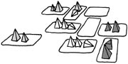
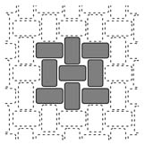
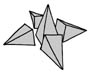

|
 |
Board setup and deal: Each player starts with a "stash" of 5 Trios of pyramids of the same color (each player should have a different color). Deal out 6 cards to each player, then tile 9 cards in a 3x3 grid. These are the first 9 territories that compose the playing area. Any empty space right next to a territory is a "wasteland" space. During the game, pieces may be in a wasteland, and it is just like a territory but without any power. Any empty space not next to any territory is a "void" space. Pieces in the void are immediately returned to the player's stash. No actions may be taken upon void spaces.
Draw pile: Place the remaining cards face down as the draw pile. Reshuffle the discard pile whenever the draw pile is exhausted.
Winning: Your score is the total value of territory occupied by only your pieces. Major cards (dark background, numbered 15-36) are each worth 3 points, royalty cards (inverse symbols, numbered 11-14) are 2 points, minor cards (numbered 1-10) are 1 point, and wasteland spaces are 0 points.
At the end of your turn, you may announce to the other players that your next turn will be your last. After your next turn, if you have 9 points or more, you win. If not, you are eliminated from the game: remove all your pieces from the board and discard your hand. You may not announce your last turn if another player just announced theirs and they have not had it yet. If all players agree before starting the game, you can play to 8 points for a shorter game, or 10 points for a longer game.
Determining who goes first: For your first game, just pick someone to go first. After you have the game under control, you should use the official starting rule that follows: To start the game, every player must select a bid card and put it face down. They are revealed and the player with the highest numbered card wins the bid. If there is a tie, set aside the bidding cards and then every player must bid again, repeated until one player wins the bid. The player to the right of the winner draws from any of the bid cards until his hand has six cards again, as does each player in turn counterclockwise around the table. Finally, the winner goes first, turns proceeding clockwise. This compensates players who will go last by improving their hands.
Orientation and targeting: A piece on the board may point in any of the four cardinal directions or point straight up. To "orient" a piece is to change its direction to any of the five legal directions. A piece of yours that is able to take an action is called your "minion". When pointing up, the minion can target the current space or any pieces in the current space. When pointing out, the minion can target the adjacent space or any of the pieces on that space.
The minion can always target itself, regardless of its orientation.
As a general rule, when you do something to one of your own pieces, you may change its orientation; however, if you do something to an enemy's piece, you may not change its orientation.
Turn options: If you have no pieces on the board, you may only put a small piece in any orientation on any empty territory or wasteland. Otherwise, do one of the following, keeping in mind that all powers are optional:
*⃝ Create: Add one of your small pieces to the target territory, but only if there are fewer than three pieces of any ownership in that territory already. Place it in any orientation. You may instead create an enemy piece if you are targeting one, in which case you add one of the enemy's small pieces to the target territory in the same orientation as the enemy's original piece, but again you may only add the new piece if there are fewer than three pieces in that territory. If no small piece is available, you may not create a new one.
Alternatively, you may create a territory by placing a minor card from your hand into a targeted wasteland (an empty space next to a territory) if the wasteland space is not occupied by enemy pieces. You may not create in the void (an empty space not next to a territory). Any pieces that were on the targeted wasteland remain there in the same orientations, even though the territory under them has changed. If you don't have a card in your hand that is worth exactly one point, you cannot create a territory.
▶⃝ Move: Move the minion in the direction the minion is pointing, or push a target piece in that same direction. It may be moved or pushed up to as many spaces as the minion has pips: small minions move or push one space; medium minions move or push one or two spaces; large minions move or push one, two, or three spaces. However, the moved piece may never end in a territory with three or more pieces in it, nor may it end in the void (an empty space not next to a territory). You may not move a piece zero spaces. If the piece moved is yours then you may orient it, but if it is an enemy piece then it retains its original orientation. Note that a piece standing upright may not use a Move.
Alternatively, you may push a territory in the direction the minion is pointing, but only if the territory is not occupied by enemy pieces. When a territory is pushed, all pieces remain in their spaces, with their orientations intact; they do not move with the territory. The territory may be pushed up to as many spaces as the minion has pips. The territory may be pushed through any space, but must land in a wasteland (an empty space next to a territory) that is not occupied by enemy pieces. If a territory lands in a wasteland occupied by your own pieces, place the territory under your pieces. You may not push a territory into the void. Note that a pushed territory may have to change its orientation to fit the board's horizontal-vertical tile pattern.
+⃝ Grow: When growing a piece, the minion or target piece is replaced by a piece exactly one size larger of the same color. If the piece is yours then you may orient it, but if it is an enemy piece then it retains its original orientation. If there isn't a piece of the size you need in the stash, you cannot grow that piece.
Alternatively, you may grow the target territory if it is not occupied by enemy pieces. Discard the targeted territory and then replace it with a territory from your hand that is worth exactly one more point than the original territory. Thus a minor card can be grown to a royalty card, or a royalty card can be grown to a major card. Any pieces that were on the targeted space remain there in the same orientations, even though the territory under them has changed. If you don't have a card in your hand that is worth exactly one more point that the original territory, you cannot grow that territory.
-⃝ Attack: When attacking a piece, the minion shrinks the target piece, also known as the "victim", up to as many pips as the minion has, replacing the victim with the appropriately smaller piece from the victim player's stash in the same orientation as the original victim. Thus a small piece shrinks its victim by one pip; a medium piece by one or two pips; and a large piece by one, two, or three pips. If you shrink the victim down to zero pips, it is simply destroyed, but if the victim would be left with one or two pips and there is no smaller piece to replace it, you cannot shrink it. You may not attack a victim for zero pips of damage. You may allow the minion to attack itself, either shrinking it or even destroying it. If you attack one of your own pieces and it is not destroyed, you may orient it after shrinking it.
Alternatively, you may attack a territory if it is not occupied by enemy pieces. Shrink the targeted territory's value up to as many pips as the minion has by discarding the territory and replacing it with an appropriately lesser valued card from your hand, or no card if the territory is destroyed. If the territory is not destroyed, and you do not have the required lower valued card in your hand, you cannot do this action. You may not replace the territory with one from your hand that has the same value. If you destroy a territory and it leaves any minions in the void, they are also destroyed.
Notes about major cards:
Many of the major cards have two powers; the Devil has three. When the card is played from your hand,
all of your pieces are minions, and you may split the powers between several pieces or use them all on one
piece. For example, when playing Death from your hand, two different pieces may attack once each, or any
one piece could attack twice.
When the card is activated on the board then the pieces that touch that card are minions for the duration of that turn, and they are able to use the power of the card. In addition, any of your pieces that are directly affected by a minion become minions for that turn. For example, when activating the Lovers on the board, one of your pieces could use the Move to move off of the Lovers and yet that piece could use the Lovers' Create action. Alternatively, one of your pieces on the Lovers could use the Move to push away one of your pieces, and that pushed piece could still use the Create.
Whenever the same piece or territory is being affected by two actions, you may take shortcuts that you would not be able to take if you had to do the two actions in two different turns. This will be clarified in each case below.
All powers are optional. For example, you may choose to use Temperance for one Create rather than two. You may use the Moon just to Attack or just to Move.
In no case may you reverse the powers of a major card that has two different powers. For example, the Sun is always a Create followed by a Grow. You may not play the Grow first and the Create second.
Major card powers:
Fool – Turn over the next card from the draw pile and play it. Repeat once. As with all actions, using the powers of these cards is optional.
Magician – Use as an Attack, Move, Create, or Grow.
High Priestess – Discard any or none of your cards and then draw your hand up to 6 or fewer cards, then discard and draw again.
Empress – Orient a minion, and then use as a Create, ignoring the normal limit of three pieces in a space.
Emperor – Orient a minion, and then use as a Move, ignoring the normal limit of three pieces in a space.
Hierophant – Replace the target piece with one of yours of the same size, and then orient it. This may not be done if you do not have a piece of the same size in your stash.
Lovers – Use as a Move and then use as a Create.
Chariot – Use as a Move twice. If both move the same piece, it may pass through the void or through a territory that has three or more pieces in it, but may not end there. For example, a small piece could move through a territory that has three pieces in it and come out the other side to a territory that has only one piece in it.
Strength – Use as a Grow twice. If both grow the same piece or territory, you may skip the intermediate step. For example, you may grow a minor card to a major card without spending a royalty card.
Hermit – Move a targeted piece to any empty territory or wasteland space on the board, or move a targeted territory to any wasteland on the board not occupied by enemy pieces. As with Moves, if you move your own piece it may be placed in any orientation, but if you move an opponent piece it must remain in the same orientation it had before moving. When using the Hermit to move a territory, the targeted territory may not be occupied by enemy pieces.
Wheel of Fortune – Use as a Create. When used to create territory you may optionally draw the new territory from the first card of the draw pile rather than from your hand, and thus replace the target wasteland with the randomly drawn card. This could potentially change a wasteland into a major card if you are lucky.
Justice – Trade hands with the player who owns the piece that your minion is targeting; then use as an Attack.
Hanged Man – Use as a Move; then trade hands with the player who owns the piece that your minion is targeting.
Death – Use as an Attack twice. If both attacks shrink the same piece or space, you may skip the intermediate step. For example, a small piece could kill an opponent's medium piece even if the opponent had no small pieces on his or her stash.
Temperance – Use as a Create twice.
Devil – Orient a target piece, even if it is not yours. Repeat two times. Note that if you orient your minion as one of the three orientations, its targets change. For example, an upright piece on the Devil could orient to point at a nearby enemy, and then orient two enemies on that territory to point away. The Devil is the only card that allows you to orient an enemy piece, and is the only card with three powers.
Tower – Orient a minion, then use as an Attack. If used to reduce a territory, the new territory may optionally come from anywhere in the discard pile, rather than your hand.
Star – Orient a minion, then use as a Grow. If used to grow a territory, the new territory may optionally come from anywhere in the discard pile, rather than your hand. When the Star is played from your hand, it goes into the discard pile, and if you are growing a territory from a royalty card to a major card, you could grow it into the Star.
Moon – Use as a Move and then use as an Attack. The Moon may be used to enter a territory containing three pieces, as long as only three pieces remain after the Moon's attack action.
Sun – Use as a Create and then use as a Grow. If they create and grow the same territory or piece, you may skip the intermediate step. For example, a minion using the Sun can place a royalty territory in a targeted wasteland without first creating a minor territory.
Judgement – Draw cards from anywhere in the discard pile into your hand, drawing one card for each pip of the minion, but paying attention to the hand limit of 6 cards. For example, a medium piece on Judgement could draw two cards into your hand, but only if you have four or fewer cards already. When Judgement is played from your hand, any of your minions could be the active minion, and you could use one of the draws to draw back Judgement itself.
World – Has the power of any major territory on the board.
Credits:
Director: John Cooper
Game designers: John Cooper, Kory Heath, Kristin Matherly, Jacob Davenport
Playtesters: Andy Looney, Alison Frane, countless others
Technical Writer: Jacob Davenport
Other documents:
Frequently Asked Questions
Strategies
Differences with Zarcana
Design History Overview
Samples of our Gnostica beta deck
Gnostica Rules Reference (pdf)
Gnostica Stickers (pdf)
This version of the rules was created by Doug Orleans on January 8, 2014. It was adapted from the original rules to be used with the Minimalist Gnostica Deck rather than a tarot deck.
{kind=link}